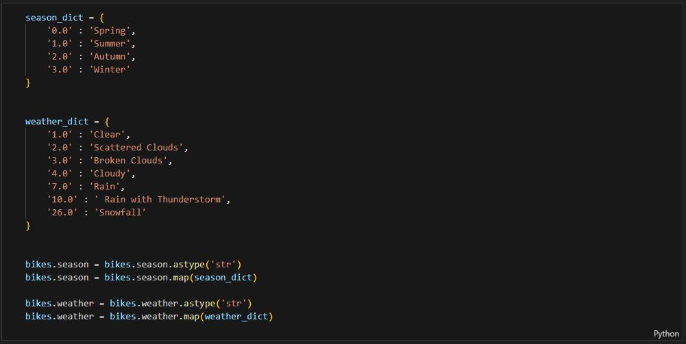

üö¥üèΩ‚Äç‚ôÄÔ∏èPedaling through Data Delights: Python x Tableau Unveil London's Bike Ride Saga!
Embark on a two-wheeled journey through Python and Tableau, unveiling the saga of London's bike rides!

Strap on your helmets and gear up for a thrilling ride through the vibrant data landscape of London's bike rides! In this Python x Tableau extravaganza, we're not just crunching numbers; we're pedaling through the city's pulse. Python sets the wheels in motion, extracting, analyzing, and transforming data, while Tableau paints a vivid canvas of visual delights. Join me as we embark on a two-wheeled journey, exploring the twists, turns, and tales hidden in London's biking data. It's not just a ride; it's a data-driven adventure! venture into my GitHub page for a hands-on experience
Commencing our journey, I start by installing fundamental Python libraries—Pandas for data handling, Zipfile for decompression, and Kaggle for dataset access. This step lays the groundwork for our exploration into London's bike ride data. It's a systematic approach, ensuring we have the tools needed for a detailed analysis of the dataset.
Moving swiftly along our Pythonic trail, the next checkpoint involves securing the dataset directly from Kaggle using its API. With a deft command, I summon the Kaggle API to fetch the dataset, bringing the raw material for our analysis straight into our Python lair. It's akin to sourcing the treasure map for our data adventure, ensuring we have the latest and greatest insights at our fingertips.

Our Pythonic expedition hits another milestone as I deftly unzip the dataset, freshly downloaded from Kaggle, using the trusty Zipfile tool. With a flick of code, I transform this zipped archive into a Pandas dataframe, dubbing it 'bikes.' This dataframe becomes our canvas, ready to capture the nuances of London's bike ride data. It's like unrolling a treasure map, revealing the intricate pathways we're about to explore.

Ensuring we're on the right track, I conduct a quick inspection of our 'bikes' dataframe. The trusty bikes.info() and bikes.shape commands provide a snapshot of the dataset's dimensions—rows and columns. A simple call to bikes spills the first few rows onto the screen, offering a glimpse into the data structure. It's akin to surveying the terrain before embarking on a journey, making sure our dataset aligns with expectations.
Displaying the results of our data expedition, here's a snapshot of the 'bikes' dataframe as observed through the straightforward bikes command. Rows and columns unfold, revealing the initial facets of London's bike ride data. It's like peering through a window into the diverse landscape of our dataset, setting the stage for deeper exploration.
Navigating through the data landscape, my attention turns to the weather codes, the first checkpoint in our data cleaning endeavor. With a meticulous inspection, I tally the distinct weather codes, unraveling the variety encapsulated in this numerical realm. It's akin to deciphering a codebook before embarking on a cryptographic quest. This initial step ensures our dataset is coherent and sets the foundation for a seamless exploration of London's bike ride data.
Continuing our meticulous data scrutiny, the next stop on our cleaning crusade involves a thorough examination of the season codes. I carefully inspect and count the unique values within the 'season' column, ensuring clarity and consistency in this essential attribute. It's akin to cataloging the seasons before setting out on a journey through time. This step fortifies our dataset, providing a clearer path for interpreting the seasonal nuances ingrained in London's bike ride data.
In pursuit of clarity, I embark on a refinement quest, adjusting the column indices to enhance readability and facilitate visualization. Each column receives a makeover, ensuring that when we peruse the dataset or delve into visualizations, the intent is crystal clear. It's like fine-tuning the instruments before a grand performance—setting the stage for a seamless interpretation of London's bike ride data. This meticulous adjustment adds a layer of precision to our dataset, enhancing its appeal for future analyses.
In pursuit of data lucidity, I make a strategic move by transforming numerical representations of season and weather into more interpretable strings. This conversion injects clarity into the dataset, ensuring that the categorical nature of season and weather is explicit, both in reading and visualization. It's like translating a coded language into plain text—unlocking the narratives embedded in London's bike ride data. With this transformation, our dataset becomes more accessible and ready for nuanced analyses.
The curtain falls on our data preparation act as I conduct a final inspection, ensuring our dataset is primed and ready for the grand visualization spectacle. Satisfied with the transformational journey, I declare the data fit for its starring role in insightful visualizations. With a triumphant flourish, I export this refined dataset to an Excel file—a snapshot frozen in time, capturing the essence of London's bike ride data in its finest form. The stage is set, the dataset is prepared, and we're poised for a captivating data visualization performance.
Stepping into the realm of visualization, I orchestrate a dynamic showcase of London's bike ride data, offering a panoramic view of rider trends across various weather seasons and dates. The visual spectacle is finely tuned, featuring a flexible filter that empowers users to customize the experience. Harnessing the magic of moving averages, I've sculpted this visualization to adapt seamlessly—whether you prefer to dissect the data in days, weeks, or months. The choice is yours, allowing for an immersive exploration of bike ridership patterns tailored to your analytical preferences.
As the maestro of this visual symphony, I've carefully crafted the duration of moving averages, providing options spanning from a concise 2 days to a more expansive 2 months. This flexibility invites you to navigate the temporal nuances of London's bike ride data with precision, unveiling patterns and trends that align with your analytical pursuits. The stage is set for a personalized exploration, where every adjustment unlocks a new facet of the narrative woven within the dataset.
As the curtain descends on this Python-powered tableau of London's bike ride data, I invite you to immerse yourself in the dynamic visualizations crafted to unfold the narrative of rider trends across varying weather seasons and dates. The journey through data exploration and visualization has been a thrilling odyssey, capturing the essence of London's cycling patterns. Should you crave a behind-the-scenes peek at the Python code orchestrating this symphony, venture into my GitHub repository. Additionally, for those who yearn to partake in the interactive experience, tailored to their temporal preferences, the full visualizations await your exploration on my Tableau page. This portfolio isn't just a static collection—it's an open invitation to engage, explore, and uncover the nuances of London's bike ride data.